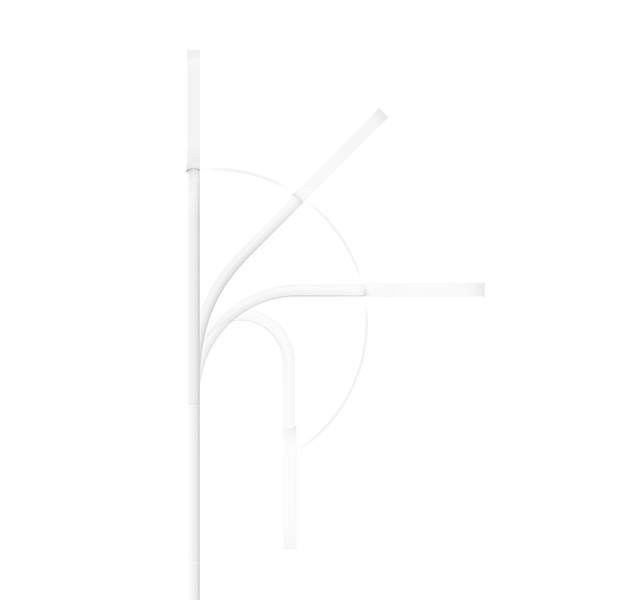
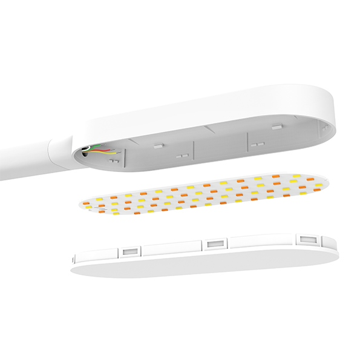

<div class="row desk">
    <div class="col-md-10 col-md-offset-1 col-lg-8 col-lg-offset-2 content">
        <section class="row desk_content_1">
            <div class="col-xs-12 col-sm-12 col-md-6 col-lg-6">
                <div class="text">
                    <h1>LED Smart Desk Lamp</h1>
                    <h2>Свет — начало для творчества</h2>
                    <p>Большой угол поворота лампы | Безвредный диапазон цветовых температур | Встроенный аккумулятор | Гибкая
                        трубка
                    </p>
                </div>
            </div>
        </section>
        <section class="row desk_content_2">
            <div class="col-xs-12 col-sm-6 col-md-6 col-lg-6">
                
            </div>
            <div class="col-xs-12 col-sm-6 col-md-6 col-lg-6">
                <div class="text">
                    <h2>Минималистичный дизайн наполненный функционалом</h2>
                    <p>Лампа выполнена в концепте Bionic Design, который предполагает заключение максимально возможного функционала
                        в минималистичный внешний вид. Ничего лишнего — только приятный свет!</p>
                </div>
            </div>
        </section>
        <section class="row desk_content_3">
            <div class="col-xs-12 col-sm-12 col-md-12 col-lg-12">
                
            </div>
        </section>
        <section class="row desk_content_4">
            <div class="col-xs-12 col-sm-12 col-md-6 col-lg-6">
                <div class="text">
                    <h2>Измените направление света одним движением</h2>
                    <p>Гибкая ручка лампы выполнена из качественной стали и ABS пластика, что позволяет ей поворачиваться в
                        любую сторону, в том числе вокруг своей оси. Тесты показывают что такая конструкция легко выдерживает
                        10 000 поворотов, не теряя своей прочности.
                    </p>
                </div>
            </div>
            <div class="col-xs-12 col-sm-12 col-md-6 col-lg-6">
                
            </div>
        </section>
        <section class="row desk_content_5">
            <div class="col-xs-12 col-sm-12 col-md-10 col-lg-10 col-md-offset-1 col-lg-offset-1 align-center">
                <div class="text">
                    <h2>Настраивайте яркость и температуру света</h2>
                    <p>Свет лампы состоит из холодного белого и теплого белого света, излучаемого 60 высококачественными диодами.
                        Диапазон цветовых температур лежит в пределах 2700K-6500K. Это позволяет настроить комфортный свет
                        для любого вида деятельности.
                    </p>
                    <p>Фокусируйтесь | Читайте | Работайте за компьютером | Рисуйте</p>
                </div>
                <div class="mode-switch">
                    <span id="focus" class="mode active"></span>
                    <span id="reading" class="mode"></span>
                    <span id="computing" class="mode"></span>
                    <span id="drawing" class="mode"></span>
                </div>
            </div>
        </section>
        <section class="row desk_content_6">
            <div class="col-xs-12 col-sm-6 col-md-6 col-lg-6">
                
            </div>
            <div class="col-xs-12 col-sm-6 col-md-6 col-lg-6">
                <div class="text">
                    <h2>Профессиональный оптический рассеиватель</h2>
                    <p>Рассеиватель содержит множество мелких частей рассеивающих свет максимально равномерно. Так же рассеиватель
                        позволяет отсекать большую часть вредного спектра света, делая лампу абсолютно безопасной для вашего
                        зрения.</p>
                </div>
            </div>
        </section>
        <section class="row desk_content_7">
            <div class="col-xs-12 col-sm-8 col-md-6 col-lg-6">
                <div class="text">
                    <h2>Простое подключение и&nbsp;зарядка</h2>
                    <p>Лампа питается и заряжается через MicroUSB кабель. Это позволяет ей использовать любой источник тока,
                        через адаптер 220V, ноутбук, внешний аккумулятор. Больше не нужно думать как подключить лампу — просто
                        включите ее куда удобно!</p>
                </div>
            </div>
        </section>
        <section class="row desk_content_10">
            <div class="col-xs-12 col-sm-12 col-md-12 col-lg-12">
                
            </div>
        </section>
        <section class="row desk_content_8">
            <div class="col-xs-12 col-sm-10 col-md-6 col-lg-6">
                <div class="text">
                    <h2>Встроенный аккумулятор — для тех кто не любит провода</h2>
                    <p>Лампа LED Smart Desk Lamp выпускается в двух вариантах — стандартная модель и модель со встроеннным литий-ионным
                        аккумулятором на 2000 mAh. Время работы от одного заряда составляет до 5 часов (при температуре 4000K
                        и 60% яркости)</p>
                </div>
            </div>
        </section>
        <section class="row desk_content_9">
            <div class="col-xs-12 col-sm-12 col-md-10 col-md-offset-1 col-lg-10 col-lg-offset-1 align-center">
                <div class="text">
                    <h2>Сенсорная панель управления</h2>
                    <p>Простая сенсорная панель позволяет легким касанием включать и выключать лампу, изменять яркость и световую
                        температуру. Пятиступенчатая регулировка яркости от 20% до 100% и цветовой температуры от 2700K
                        до 6500K.</p>
                </div>
            </div>
        </section>
        <section class="row desk_content_11">
            <div class="col-sm-12 col-md-12 col-lg-12">
                <table class="table">
                    <thead>
                        <tr>
                            <th colspan="2">Характеристики</th>
                        </tr>
                    </thead>
                    <tbody>
                        <tr>
                            <td>Модель</td>
                            <td>YLTD01YL (стандартная), YLTD02YL (аккумуляторная)</td>
                        </tr>
                        <tr>
                            <td>Цвет</td>
                            <td>Белый</td>
                        </tr>
                        <tr>
                            <td>Размеры</td>
                            <td>337x351x150mm</td>
                        </tr>
                        <tr>
                            <td>Вес</td>
                            <td>590g (стандартная), 650g (аккумуляторная)</td>
                        </tr>
                        <tr>
                            <td>Световой поток</td>
                            <td>260lm</td>
                        </tr>
                        <tr>
                            <td>Цветовая температура</td>
                            <td>2700K-6500K</td>
                        </tr>
                        <tr>
                            <td>CRI</td>
                            <td>>88</td>
                        </tr>
                        <tr>
                            <td>Диапазон яркости</td>
                            <td>20%-100%</td>
                        </tr>
                        <tr>
                            <td>Угол освещения</td>
                            <td>120°</td>
                        </tr>
                    </tbody>
                </table>
            </div>
        </section>
    </div>
</div>